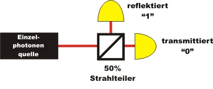

Quantenkryptographie Kapitel 1:
Verschlüsselung mit dem One-Time-Pad
Der Datenaustausch erfolgt heute meist in digitaler Form. Digitale Nachrichten bestehen aus den Binärzahlen 1 und 0. Jeder Buchstabe einer Nachricht wird zunächst in Binärzahlen zerlegt, über das Internet übertragen und beim Empfänger wieder als Buchstabe angezeigt. Ein Lauscher könnte diese binäre Nachricht abfangen, lesen und zum eigentlichen Empfänger weiterleiten. Der Empfänger hat keine Kontrolle darüber, ob die Nachricht bereits gelesen oder sogar manipuliert wurde.
Auf der folgenden Seite wird ein Kryptographieverfahren vorgestellt, das bei Beachtung aller Regeln eine Sicherheit von 100% bietet. Das Verfahren hat noch nichts mit der Quantenphysik zu tun. Die Quantenphysik wird erst später benötigt, um den geheimen Schlüssel absolut zufällig zu erzeugen und absolut sicher zu übertragen.
Grundlagen des One-Time-Pads
Um eine Nachricht sicher zu übertragen, benötigen sowohl der Sender als auch der Empfänger einen geheimen Schlüssel. Der Sender verschlüsselt die Nachricht mit dem geheimen Schlüssel. Die verschlüsselte Nachricht wird danach öffentlich z. B. über das Internet übertragen. Der Empfänger entschlüsselt die verschlüsselte Nachricht mit seinem eigenen geheimen Schlüssel und besitzt somit die eigentliche Nachricht. Ein Spion kann die verschlüsselte Nachricht zwar unbemerkt abfangen, jedoch fehlt ihm der geheime Schlüssel um die Nachricht zu entziffern.
Um eine Nachricht sicher zu übertragen, benötigen sowohl der Sender (Alice) und der Empfänger (Bob) der Nachricht einen exakt gleichen, aber geheimen Schlüssel. Zur digitalen Übertragung muss der Schlüssel wie die eigentliche Nachricht binär sein und muss aus zufällig gewählten 1 und 0 bestehen. Alice und Bob müssen sich zunächst einmal persönlich und ganz allein treffen, um den geheimen Schlüssel zu erzeugen und für beide zu kopieren. Erst wenn Alice und Bob im Besitz des geheimen Schlüssels sind, kann die eigentliche Verschlüsselung und Übertragung der sensiblen Nachricht beginnen. Für die Verschlüsselung wird die eigentliche Nachricht mit dem Schlüssel binär addiert. Bei der binären Addition (nach der XOR-Logik) gibt es die folgenden vier Rechenregeln:
Die verschlüsselte Nachricht wird dann öffentlich und für jeden lesbar z. B. auf einer Postkarte oder über das Internet übertragen. Ein Spion kann mit der verschlüsselten Nachricht ohne den Schlüssel nichts anfangen. Beim Empfänger wird der verschlüsselte Text wieder mit dem gleichen Schlüssel binär addiert und der Empfänger besitzt die eigentliche Nachricht:
In der folgenden Animation wird das Verschlüsselungsverfahren mit einem Beispiel noch einmal ausführlich behandelt. Bei diesem Beispiel wird eine Nachricht mit 5 Bits verschlüsselt, übertragen und durch den Empfänger entschlüsselt. Mit 5 Bits können 32 verschiedene Zahlen oder Zeichen übertragen werden. Diese Anzahl ist z. B. für das Alphabet ausreichend: A: 00000, B: 00001, C: 00010, D: 00011, E: 00100, F: 00101, G: 00111, H: 01000, ....
Der geheime Schlüssel im One-Time-Pad:
Das beschriebene Kryptographieverfahren wurde 1918 vom dem Kryptologen G. Vernam entwickelt und als "One-Time-Pad" bezeichnet. Übersetzt heißt dies Einmalblock: Der Schlüssel wird erzeugt und nur auf zwei Blöcke für Alice und Bob geschrieben. Jede Blockseite mit dem Schlüssel darf nur einmal verwendet werden. In Zeiten des kalten Krieges wurden die Schlüssel in kleine Blöcke gedruckt und mit Hilfe von Boten übertragen. Falls der Bote nicht an seinem Ziel ankam, so hatte der "Feind" nur den Schlüssel erhalten. Dieser Schlüssel hat nichts mit der eigentlichen Nachricht zu tun und war für den "Feind" wertlos. Die eigentliche Nachricht wurde dann nicht mehr mit diesem Schlüssel codiert. Gefährlich wurde es aber, wenn der Schlüssel auf dem Weg des Boten unbemerkt kopiert wurde. Die verschlüsselte Nachricht konnte somit entziffert werden.
Das Verfahren One-Time-Pad ist zu 100% sicher [Sha49], wenn für den geheimen Schlüssel folgende Bedingungen erfüllt sind:
Welche Bedingungen lassen sich bisher erfüllen?
Für die Bedingung 1 ist der Sender und der Empfänger verantwortlich. Jeder Schlüssel muss nach dem einmaligen Verwenden sofort vernichtet werden, so dass er nicht ein zweites mal verwendet werden kann. Die Bedingung 2 lässt sich ebenfalls durch den Sender erfüllen. Der Sender darf eine Nachricht nur verschlüsseln, wenn er genügend Schlüssel Bits zur Verfügung hat.
Für die Bedingung 3 werden zur Erzeugung des Schlüssels Zufallszahlen benötigt. Zufallszahlen können z. B. mit Hilfe eines Computers erzeugt werden. Dieser Computerzufall wird allerdings über eine Rechnung generiert. Grundlage für die Rechnung ist ein Startwert, der sich selten wiederholt. Die "Zufälligkeit" der Computerzahl hängt somit nur von der Komplexität der Rechenvorschrift und von dem Startwert ab. Computergenerierte Zufallszahlen werden deshalb als "Pseudozufallszahlen" bezeichnet und sind für die absolut zufällige Erzeugung eines Schlüssels nicht geeignet.
Richtige Zufallszahlen können mit Hilfe der Quantenphysik erzeugt werden. Trifft ein einzelnes Photon auf einen Strahlteiler, wird es absolut zufällig reflektiert (Binär 1) oder transmittiert (Binär 0) (Abb. 1). Hinter der Entscheidung steckt keine mathematische Rechenvorschrift. Ein solcher Quantenzufallsgenerator wird im Abschnitt Quantenzufall mit Experimenten ausführlich beschrieben.

Abb. 1: Quantenzufallsgenerator mit angekündigter Einzelphotonenquelle
Mit dem Quantenzufallsgenerator kann die Bedingung 3 erfüllt werden. Nun müssen die zufällig generierten Schlüssel an den Sender und an den Empfänger so verteilt werden, dass er eben nur genau diesen zwei Personen bekannt ist (Bedingung 4). Mit Boten ist die Sicherheit wieder nicht gewährleistet. Aber auch hier bietet die Quantenphysik die ideale Lösung [weiter].
Zum Kapitel 2: Schlüsselverteilung mit einzelnen Photonen (Schulniveau)
Zurück zur Übersicht
Autor: P. Bronner, August 2008